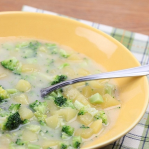

My Recipies
We have many food item.Appetizers,soup,salads,Main Dishes
Desserts Drinks etc.
We have also more racipies like many kind os salads such as Arabic Salad
Supreme,
Banana and parsley Salad,Caesar Salad,Chana (garbanzo bean) salad.Cucumber Yogurt
Salad,Easy
California Spinach Salad etc.

Soup racipie
Place onion and hash browns in 3-quart saucepan. Cover with chicken broth. Cover pan and simmer until
tender, about 10 minutes.
Add broccoli and simmer another 5 to 10 minutes. Stir in milk, lemon juice, salt, pepper, and
nutmeg.
Heat until hot, Top with shredded Swiss cheese.
.jpeg)
Salad racipie
he king of all salads, that started in the Levant (Lebanon, Syria). It is an integral part of any
appetizer course called Mezze. Many different variations exist, this one is the Lebanese version. It
is
believed that Parsley is a potent herb that helps purify the blood. This is eaten using very tender
grape leaves, Romanian lettuce, or head lettuce to pick up in bit-size servings.
.jpeg)
Desserts racipie
Authentic strudel is made with strudel dough, a labor-intensive, paper-thin dough. To simplify
things,
we've used store-bought phyllo dough, which is widely available and relatively easy to work with.